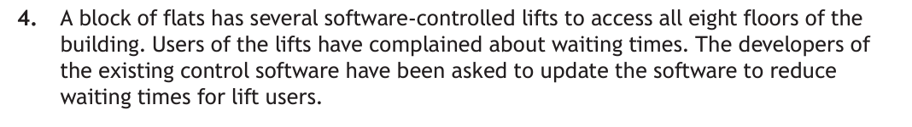
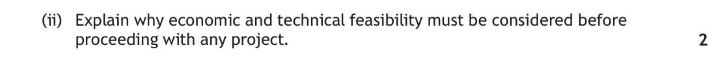
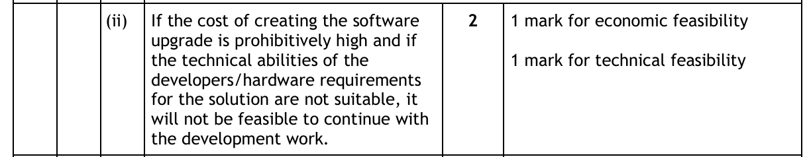
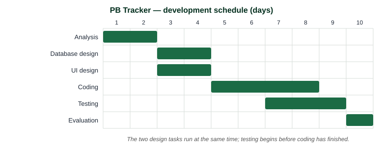
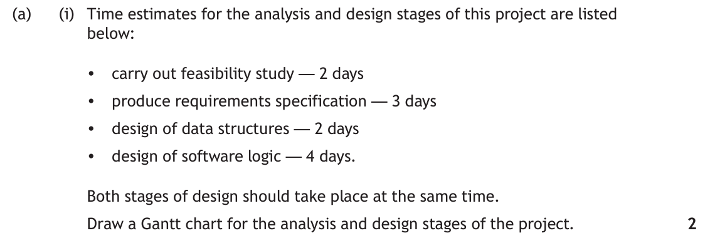
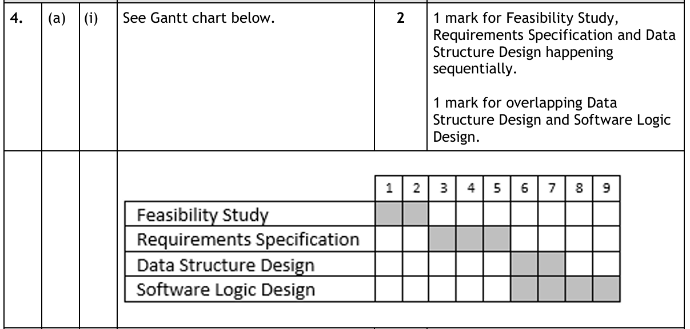
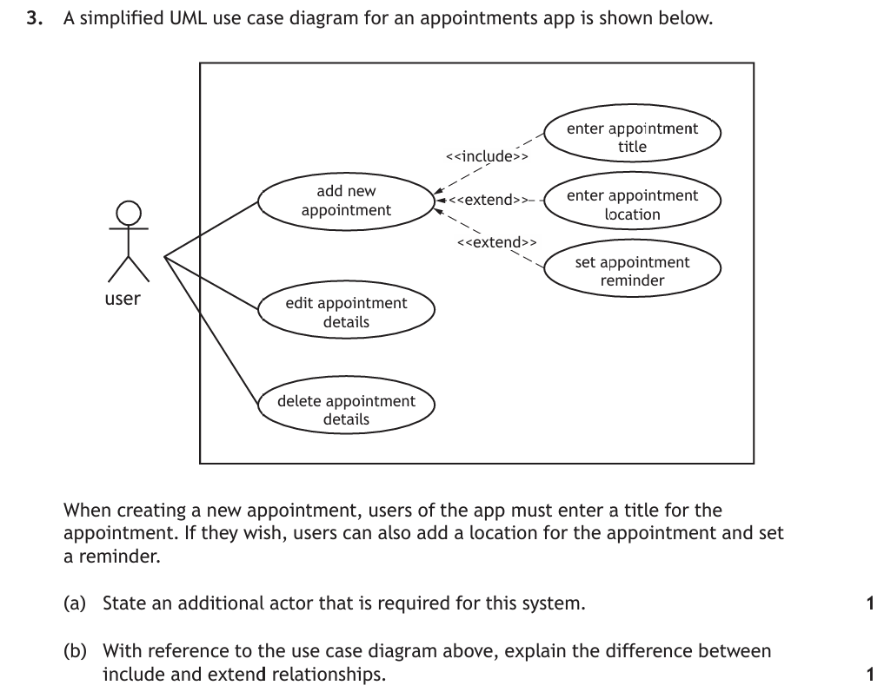
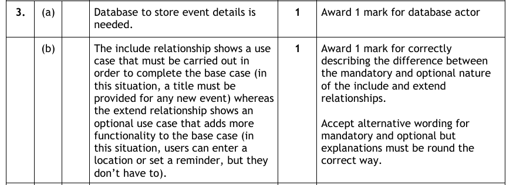

Analysis at Advanced Higher
Analysis is the process of understanding exactly what the client and end users want from a system — before any design work starts. At Higher you identified the purpose, scope, boundaries and functional requirements of a problem, and all of that still applies. At Advanced Higher, analysis grows into a full requirements specification, and three new activities are added around it:
- Research — feasibility studies and user surveys that establish whether the project should go ahead at all;
- Planning — scheduling the work, identifying the resources needed, and presenting the plan as a Gantt chart;
- Modelling — capturing how users will interact with the system in a UML use case diagram.
This content applies equally to SDD, DDD and WDD problems, and to problems that integrate them — which is exactly what your project requires. Analysis is worth 10 marks of the project and typically between 3 and 8 marks of the question paper.
Key Terms
Higher Recap — Analysing a Problem Spec
At Higher, every analysis started from a client's description of a problem. You may remember this one — a 5K running club wanting a program to analyse race results:
"I help run a local 5K running club that has 50 runners. I would like a program that reads each runner's name and finish time from a file — times are recorded as a whole number of minutes and are never more than 60. It should tell me the fastest time and who set it, and count how many runners finished in under 30 minutes. I would also like to type in a runner's name and see their time, and have the program save the names of everyone who finished under 30 minutes to a new file."
From that description, a Higher analysis pulls out four things:
Purpose
A program for a 5K running club that analyses runners' finish times — identifying the fastest runner, reporting how many finished under 30 minutes, looking up an individual runner's time, and saving a list of the sub-30-minute runners.
Scope
The project will deliver the completed program, its design, a test plan, the test results and an evaluation report.
Boundaries
- The club has 50 runners, so the program only needs to read and store 50 records.
- Each finish time is a whole number of minutes between 0 and 60.
- Only the runner's name is written to the new file — not their time.
Functional Requirements
At Higher these are set out as inputs, processes and outputs — and notice that every input and output is clearly labelled with where it comes from or goes to. That labelling habit matters even more at Advanced Higher, where an input might come from the keyboard, a file, a web form or a database. (At Advanced Higher you will more often write them as a numbered list of individual requirements instead — the same information, laid out so each one can be tested on its own.)
| Inputs | Processes | Outputs |
|---|---|---|
|
|
|
Analysis From the Beginning
Here is a new problem — one that needs an Advanced Higher analysis. Notice it has everything your project needs too: data read from and written to a database, user input from the keyboard, and processes that include a standard algorithm.
"Westbrae Harriers has 120 members. Every race result — the athlete, the distance, their time, the date and the event — is stored in our club database. I want a program where I can type in an athlete's name and a distance, and see their personal best for that distance along with their three most recent times. After a race I want to type in the new results and have them saved to the database — and it would be great if the program told me straight away when a result is a new personal best. Times should be checked as they are entered; nobody runs 100 m in 3 seconds."
— The head coach
Exactly as in the Higher recap, we start by building out the purpose, scope and boundaries — and then add the Advanced Higher extra: constraints.
Purpose
A program for Westbrae Harriers' coaching staff that reads an athlete's race results from the club database, identifies their personal best for a chosen distance, and validates and stores new race results.
Scope
The project will deliver: a complete design (pseudocode/structure diagrams, query designs, a use case diagram and interface wireframes), the working program integrated with the club database, a test plan with completed test tables, the results of testing, and an evaluation report.
Boundaries
- The program only reports on the club's 120 current members, whose results are already stored in the database.
- Only track distances from 100 m to 10 000 m are supported.
- The program will not add or remove members — membership is managed by the club's existing system.
- Because new results are validated on entry, results already stored in the database can be assumed to be accurate.
Constraints
Constraints are new at Advanced Higher: the restrictions that apply to the development itself, limiting the design decisions that can be made. They come in the same four types as the feasibility studies you research next — economic, time, legal and technical — and that is not a coincidence. A constraint is a limit you have been given; the matching feasibility study is the research that asks whether the project can still succeed inside it.
| Type | The constraint on this development | The feasibility question it forces you to research |
|---|---|---|
| Economic | The club is run by volunteers and has no budget — only free software may be used, and no hosting or licence fees can be paid. | Can the system be built and maintained at zero cost, and does the coaching time it saves justify the effort of building it? |
| Time | The program must be finished before championship entries open in 12 weeks, and the volunteer developer can only work on it in the evenings. | Can analysis, design, coding and testing all be completed in 12 weeks with only that developer available? (This is what the Gantt chart is for.) |
| Legal | Race results are linked to named members, several of them juniors, so the club's data-protection policy requires results to stay on the club's own laptop — no cloud service or third-party website may be used. | Can members' personal data be stored and processed lawfully under GDPR — with consent obtained, held securely, and no more data kept than the system actually needs? |
| Technical | The program must be written in Python with SQLite — the only tools the volunteer developer knows — and must run on the club's ageing Windows laptop. | Does the developer have (or can they acquire) the skill to connect Python to a database, and will the finished program actually run on that hardware? |
Research — Feasibility Studies & User Surveys
Before committing time and money, a development team carries out a feasibility study: is the proposed expenditure of time and money likely to be worthwhile, and can the project's objectives actually be achieved? You need to be able to describe, exemplify and implement research for four types of feasibility, plus user surveys. They are the same four types as the constraints you have just met — economic, time, legal and technical — because a feasibility study is exactly the research that asks whether the project can succeed within its constraints.
The four types of feasibility
| Type | The question it answers | Real-world example |
|---|---|---|
| Economic | Can the project be completed within the available budget — and is the cost justified by the benefit? A cost-benefit analysis compares the costs of acquiring, installing and maintaining the system against tangible benefits such as reduced running costs and increased throughput. | A café is quoted £15 000 for a custom loyalty app — far more than the app could ever save the business, so the project is not economically feasible. |
| Time | Can the project be delivered within the required timescale, with the right people and resources available when needed? (Sometimes called schedule feasibility.) | A festival's online ticketing system is worthless if it launches after tickets go on sale — if development would take longer than the eight weeks available, the project is not time feasible. |
| Legal | Can the solution be created and operated without breaking the law — data protection (GDPR), health and safety, and software licensing? | A fitness app that stores users' heart-rate data is handling sensitive personal data — if it cannot store and process that data in compliance with GDPR, it is not legally feasible. |
| Technical | Does the technology needed for the solution exist, and does the organisation have (or can it acquire) the necessary hardware, software and expertise? | A courier's live parcel-tracking app depends on constant mobile signal — if its rural delivery routes have no reliable coverage, the solution is not technically feasible. |
![The four types of feasibility shown as four cards. Economic: can the project be completed within budget, and does the benefit justify the cost — a café quoted fifteen thousand pounds for a loyalty app that could never save that much. Time: can it be delivered within the timescale with people available when needed — a festival ticketing system is worthless if it launches after tickets go on sale. Legal: can it be built and operated without breaking data protection, licensing or health and safety law — a fitness app storing heart-rate data is handling sensitive personal data under GDPR. Technical: does the technology and expertise exist and is it available — a live parcel tracker fails if delivery routes have no mobile signal.](../resources/integrated/feasibility-types.svg)
Feasibility of the PB Tracker
Applying all four types to the Westbrae Harriers problem shows how a feasibility study is implemented — every conclusion refers back to the specific project:
- Economic — the club has no budget, so the project is only economically feasible because it can be built entirely with free software (Python and SQLite) by a volunteer. The benefit — hours of coaching time saved looking up results — costs the club nothing.
- Time — championship entries open in 12 weeks. The schedule estimates the work at well under this, so the project is time feasible — but only if the volunteer developer is available during the season.
- Legal — race results are linked to named members, some of them juniors, so this is personal data. The club must comply with GDPR: store only the data it needs, keep it secure, and have members' consent. This is achievable, so the project is legally feasible — but it shapes the design.
- Technical — the developer knows Python but has never connected it to a database before; research confirms the
sqlite3library will run on the club's old laptop. Technically feasible, with learning time built into the schedule.
User surveys
The users of an existing system are the best people to identify its problems and how it could be improved. When the opinion of many users is needed, a user survey (questionnaire) captures that information for the project team. Even for a brand-new system, surveying the target user group reveals how they currently carry out the process the software will replace — and the findings feed directly into the initial analysis.
The developer surveys the club's twelve coaches about how they use the current paper records. The findings change the analysis before a line of code is designed:
- Coaches almost always look athletes up by name, never by membership number → the functional requirements specify the athlete's name as the keyboard input.
- Coaches only ever check an athlete's last few races → the output is limited to the personal best plus the three most recent times — a boundary.
- Several coaches asked to check PBs on their phones at the track side → agreed to be outside the scope of this version, and recorded as such so it can be considered in a future development.
Feasibility Sorter
Read each short real-world scenario and classify it as economic, time, legal or technical feasibility. Only your first answer counts — and the feedback explains the reasoning either way, including the deliberate overlap cases.
Worked Example
Feasibility questions in the question paper usually name the types and ask you to explain them in the context of the scenario. Attempt this one before expanding it.


How to attack it: the command word is explain, so a one-word definition earns nothing. For each type of feasibility, state the question it answers and the consequence if the answer is no:
- Economic — if the cost of creating the software upgrade is prohibitively high (more than the developers or residents are willing to pay), it is not worth proceeding. (1 mark)
- Technical — if the developers lack the technical ability, or the lift hardware cannot support the updated software, the solution cannot be built at all. (1 mark)
Notice the marking instructions accept exactly this shape of answer — a cost problem and a capability problem, each ending in "it will not be feasible to continue":

Planning — Scheduling, Gantt Charts & Resources
Project management is the process of planning and controlling the activities of a project so that it is delivered on time, with the required features, within budget, to the required quality. A project plan details:
- Scheduling — when each task happens, in what order, and which tasks depend on others finishing first;
- Resources — the people, hardware and software needed to complete each task;
- Milestones — the key points at which progress is measured.
Gantt charts
A Gantt chart is like a horizontal bar graph used to plan and schedule a project involving several concurrent tasks. The horizontal axis represents the time scale; each bar shows the start and finish of one task. Its big advantage is that it shows, at a glance, the progress of the whole project — including which tasks overlap and which cannot start until another finishes. Here is a small one for the PB Tracker:

Reading it tells you the schedule's story instantly: the two design tasks run at the same time (they don't depend on each other), coding cannot start until design is complete, and testing overlaps the end of coding — components are tested as they are finished.
Gantt Chart Builder
Given task durations and dependencies (exactly like the past paper question below), drag each bar onto the timeline — or tap a bar, then tap its start day. The checker awards marks for correct sequencing and overlap, just as the marking instructions do.
Worked Example
Gantt chart questions give you time estimates and dependencies, and ask you to draw the chart. The marks are for sequencing and overlap — not artistic merit. Attempt it first.

Work through the dependencies before drawing anything:
- Step 1 — what must be sequential? The feasibility study comes first (days 1–2) — there is no point specifying requirements for a project that isn't feasible. The requirements specification follows (days 3–5), and design can only start once the requirements are known.
- Step 2 — what runs concurrently? The question states both design stages happen at the same time — so data structure design (days 6–7) and software logic design (days 6–9) both start on day 6, as overlapping bars.
- Step 3 — draw it. Task names down the side, a numbered day scale across the top, one bar per task.
The marking instructions award exactly those two decisions — 1 mark for the sequential tasks, 1 mark for the overlapping design bars:

Resources
The other half of planning is identifying the resources each stage of the development will need — the people, the hardware, and above all the software tools. In your project plan, being specific here earns credit; "a computer" is not a resource plan. Typical examples at each stage:
| Stage | Typical resources |
|---|---|
| Analysis | A word processor for the requirements specification; an online survey tool (e.g. Microsoft or Google Forms) for user surveys; a spreadsheet to analyse the responses; video conferencing or email for client interviews. |
| Design | Diagramming tools (e.g. draw.io) for structure diagrams, ER diagrams and use case diagrams; wireframing tools (e.g. Figma or Balsamiq) for interface designs; graphics packages for logos and mock-ups. |
| Implementation | A development environment and language (e.g. VS Code with Python); a database management system (e.g. SQLite, or MySQL with phpMyAdmin); code libraries (e.g. sqlite3); version control (e.g. Git) to protect the work. |
| Testing | Several web browsers, for compatibility testing of anything web-based; screenshot and screen-recording tools to capture evidence; a spreadsheet for test tables and results; a second device (or user) for usability testing. |
| Evaluation | A word processor for the evaluation report, and the collected testing evidence to refer back to. |
Remember that people (developers, test users, the client) and hardware (laptops, servers, the club's ageing Windows machine) are resources too — a schedule is only realistic if the right resources are available when the Gantt chart says they are needed.
Requirements — From End-User to Functional
All of the analysis so far feeds one document: the requirements specification. It details the scope, boundaries and constraints, and — because the client agrees to pay for what it describes — it is often the basis of a legally binding contract between client and developer, a favourite exam fact.
At its heart are two linked lists of requirements:
- End-user requirements — what the users expect the solution to let them do, written from their point of view: "The end user should …";
- Functional requirements — what the program must actually do to deliver that, written as a numbered list of individual statements: "The program should …".
Turning one into the other is the key skill — in the project you do it for real, and in the exam you may be asked to derive functional requirements from a scenario. Two rules make the list usable:
- One requirement, one job. Each numbered FR describes a single thing the program does, so it can be designed, coded and tested on its own. "Load and sort the times" is two requirements, not one.
- Every FR traces back to an end-user requirement. If you cannot say which end-user requirement an FR serves, it does not belong in the specification — and one end-user requirement usually needs several FRs to deliver it.
Here it is for the PB Tracker. Notice how naming the Advanced Higher concepts — array of records, insertion sort, database read and write — makes each requirement precise enough to build from:
| End-user requirement | Functional requirements |
|---|---|
| EU1 — The end user should be able to look up an athlete's personal best for a chosen distance, in order to select championship entries. |
|
| EU2 — The end user should be able to record a new race result and be told immediately when it is a new personal best, so that club records stay up to date. |
|
UML Use Case Diagrams
Unified Modelling Language (UML) provides a standard way to visualise the analysis and design of a software system. To model a system fully we need to capture its dynamic behaviour — what happens when the system is running — and that is the job of the use case diagram. (Its partner, the class diagram, captures the static structure and is covered in SDD Design.) A use case diagram gathers the requirements of the system, gives an outside view of it, and aids communication between the client and the developer.
The notation, piece by piece
Learn the notation for every component and relationship — drawing them correctly is where the marks are.
Actor
A person or external entity that interacts with the system — always drawn outside the boundary, with its type written underneath. Primary actors (who use the system to achieve a goal) go on the left; secondary actors (who support it) go on the right.
Use case
An action (or sequence of actions) the system must perform — an ellipse with the name inside, describing an observable, useful result for an actor. Always drawn inside the system boundary.
System boundary
A rectangle marking the limits of the system being developed, with the system name at the top. Every use case sits inside it; every actor sits outside it.
The database as an actor
If data is saved to or read from a database, the database is an external entity — so it appears as an actor, usually a secondary actor on the right. Forgetting the database actor is one of the commonest ways to drop a mark.
Association
Basic communication between an actor and a use case — a solid line with no arrowheads. Every actor must be associated with at least one use case.
Include
Mandatory — the base use case is incomplete without it, so it always runs. Dashed line, solid arrowhead pointing at the included use case: booking a ticket always takes payment.
Extend
Optional — only runs when certain criteria are met. Dashed line, solid arrowhead pointing back at the base use case: a customer only sometimes adds snacks.
Generalisation of an actor
One actor inherits all the use cases of another, then adds its own. Solid line, solid arrowhead pointing at the ancestor: a Registered User can do everything a User can.
Generalisation of a use case
Specialised versions of a general action. Solid line, solid arrowhead pointing at the general use case: Pay by Card, Pay by Cash and Bank Transfer all generalise to Make Payment.
<<include>>, and the arrow points at the included (dependent) use case. If it only sometimes happens → <<extend>>, and the arrow points back at the base use case. The arrows point in opposite directions — examiners check this.Building the PB Tracker's use case diagram
Now put the notation to work on the Westbrae Harriers problem, straight from its functional requirements:
- Actors: the Coach uses the system to achieve their goals — the primary actor, on the left. Results are read from and written to the Club Database, an external entity — a secondary actor, on the right.
- Use cases: the two things the coach can do — Look Up Personal Best and Record Race Result — each drawn as an ellipse inside the boundary.
- Relationships: every result must be validated before it is stored, so Validate Result is included in Record Race Result. The "new PB!" message only appears when the new time beats the stored best — optional behaviour, so Flag New PB extends Record Race Result. Check the arrow directions against the notation above.
Read the two dashed arrows again — they are the whole story of include vs extend in one diagram. Record Race Result cannot happen without Validate Result, so the <<include>> arrow points away from the base at the included use case. Flag New PB is the optional add-on, so its <<extend>> arrow points back at the base.
Use Case Diagram Builder
A fresh scenario — an online takeaway. Drag each actor and use case into place around the system boundary (or tap-then-tap), then choose the correct relationship notation for every link. The diagram draws itself as you answer, and first attempts count towards your score.
Worked Example
Use case questions in the question paper usually give you a scenario and either ask you to draw the diagram or complete/identify parts of one. Attempt this one yourself before expanding it.

Work through the scenario methodically:
- Step 1 — identify the actors. Who (or what) interacts with the system from outside? Remember non-human actors — a server, a payment system, a database.
- Step 2 — identify the use cases. Each individual action a user can perform gets its own ellipse, inside the system boundary.
- Step 3 — add the relationships. Solid lines for associations; then check for anything that always happens as part of another action (
<<include>>) or only sometimes happens (<<extend>>); finally look for actors or use cases that inherit from another (generalisation).

Test Yourself
Attempt each question first, then expand the marking instructions to check your answer.
A software company is asked to develop a booking system for a chain of dental surgeries. The system must be ready before a new surgery opens in three months, and must store patient medical records.
Describe two types of feasibility the company should research before accepting the contract, with reference to this scenario. (2 marks)
Marking Instructions
Any two from, 1 mark each (must reference the scenario):
- Time feasibility — can the system be developed and installed before the new surgery opens in three months?
- Legal feasibility — patient medical records are sensitive personal data, so the system must comply with data-protection law (GDPR).
- Technical feasibility — does the company have the tools/expertise to build a system of this kind?
- Economic feasibility — can the system be produced within the surgery chain's budget / will the benefit justify the cost?
A leisure centre is replacing its telephone-based system for booking swimming lessons with an online one.
Describe how a user survey could be used during the analysis of the new system, and state one way its findings could influence the requirements specification. (2 marks)
Marking Instructions
- 1 mark — a questionnaire is issued to the people who currently book lessons by phone (the target users), asking about problems with the current system and what they need from the new one.
- 1 mark — any sensible finding shaping the specification, e.g. many users book for more than one child, so the functional requirements must allow multiple children per booking; or most users would book on a phone, so the site must work on mobile devices.
Time estimates for the design and implementation stages of a database-driven project are listed below:
- design of database — 2 days
- design of user interface — 2 days
- write SQL queries — 3 days
- write program code — 4 days
Both design tasks should take place at the same time. Both implementation tasks start as soon as design is complete, and also run at the same time.
Draw a Gantt chart for these stages of the project. (2 marks)
Marking Instructions
The chart should show task names down the side and a day scale (1–6) across the top:
- 1 mark — the two design bars overlapping (both on days 1–2), with both implementation bars starting only after design finishes (day 3).
- 1 mark — the two implementation bars overlapping and of correct lengths: SQL queries on days 3–5, program code on days 3–6.
A developer is planning the testing stage of a web-based project.
State two software resources, other than the development environment, that the developer should plan to have available during testing, and justify each choice. (2 marks)
Marking Instructions
Any two from, 1 mark each (resource + justification):
- Several different web browsers — to carry out compatibility testing of the site.
- Screenshot or screen-recording software — to capture evidence of each test being carried out.
- A spreadsheet or word processor — to record the test plan, test tables and results.
A cinema website allows customers to book tickets. Booking a ticket always requires the customer's card to be authorised by a payment provider. Customers may optionally add snacks to their booking.
State the relationship that should be used to connect each of the following to the Book Ticket use case, and justify each choice. (2 marks)
- Authorise Card
- Add Snacks
Marking Instructions
- Authorise Card —
<<include>>: it is mandatory — every booking must authorise the card, so Book Ticket is incomplete without it. (1 mark) - Add Snacks —
<<extend>>: it is optional — it only runs when the customer chooses to add snacks. (1 mark)